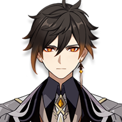
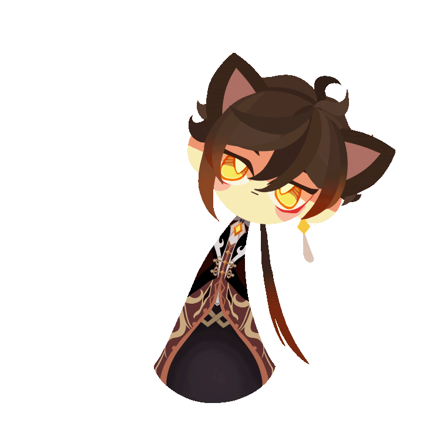

На выбор предоставляются два героя:


Эпическое приключение
Вас ждёт захватывающее однопользовательское приключение, где вы станете гостем из другого мира в поисках потерянного родного человека. Разгадайте тайны Тейвата и самого себя.Летайте над необъятными долинами, исследуйте моря и озёра, покоряйте высокие горы. Даже в самых глухих местах могут скрываться удивительные тайны этого странного мира.Путешествуйте в одиночку или сражайтесь с опасными монстрами вместе с друзьями в кроссплатформенном онлайн-режиме на 4 человека для PS4, iOS, Android и ПК.Это не просто бездумный слэшер. Только овладев гибкой и глубокой системой элементов мира Genshin Impact можно одолеть могучих врагов и решить сложные головоломки.


Чжун Ли — играбельный Гео персонаж в Genshin Impact.
Приглашённый специалист ритуального бюро «Ваншэн». Необычайно загадочен и сведущ во всех делах.
Чжун Ли — спокойный, сдержанный и вежливый человек, который много знает об истории и культуре Ли Юэ. Он придерживается очень философских взглядов на деньги и с большим уважением относится к традициям Ли Юэ, в том числе к тем, которые были забыты или искажены с течением времени. Чжун Ли очень ценит контракты. Несмотря на то, что Чжун Ли обладает широким кругозором, как правило, он скромен, и даже кажется несколько неуверенным в том, что он, как он выражается, «буржуазный паразит».
Чжун Ли в настоящее время выглядит как высокий, стройный и красивый молодой человек со светлой кожей и строгим выражением лица. Его глаза яркие и острые, янтарного цвета с жёлтыми зрачками, испускающими золотое сияние. При использовании Гео его глаза становятся люминесцентными. Его тёмно-каштановые волосы уложены в развевающуюся на ветру прическу с длинной чёлкой, свисающей с правой стороны лица. Она выцветает до янтарно-коричневого цвета на кончиках и стягивается в длинный хвост, доходящий до талии. Когда он использует свои Гео способности, янтарные кончики его хвоста светятся. Его внешний вид также используется в Статуях Семи вокруг Ли Юэ.
Чжун Ли — спокойный, сдержанный и вежливый человек, который много знает об истории и культуре Ли Юэ. Он придерживается очень философских взглядов на деньги и с большим уважением относится к традициям Ли Юэ, в том числе к тем, которые были забыты или искажены с течением времени. Чжун Ли очень ценит контракты. Несмотря на то, что Чжун Ли обладает широким кругозором, как правило, он скромен, и даже кажется несколько неуверенным в том, что он, как он выражается, «буржуазный паразит».
Чжун Ли в настоящее время выглядит как высокий, стройный и красивый молодой человек со светлой кожей и строгим выражением лица. Его глаза яркие и острые, янтарного цвета с жёлтыми зрачками, испускающими золотое сияние. При использовании Гео его глаза становятся люминесцентными. Его тёмно-каштановые волосы уложены в развевающуюся на ветру прическу с длинной чёлкой, свисающей с правой стороны лица. Она выцветает до янтарно-коричневого цвета на кончиках и стягивается в длинный хвост, доходящий до талии. Когда он использует свои Гео способности, янтарные кончики его хвоста светятся. Его внешний вид также используется в Статуях Семи вокруг Ли Юэ.
Osmanthus wine tastes the same as I remember... But where are those who share the memory?
А здесь вы можете увидеть моего любимого персонажа! („ಡωಡ„)
